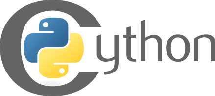

Optimizing Python Programs with

Eric Chlebek
About Me
- Scientific software developer for 6 years
- Python developer for 5 years
- HPC, CLI apps, web apps, data analysis
- Python, C/C++, Java, Go, SQL
Why Python for Scientific Computing?
- Huge array of libraries and apps for scientists
- biopython
- pymol
- numpy
- scikit-learn
- matplotlib
- Easy to learn
- Good integration with C
One big caveat...
- Python is slow
- 10-100 times slower than C
- Also slower than Ruby, JS, Clojure...
Mitigating Factors
- most of CPython standard library written in C
- numpy provides typed arrays and vectorization
- Plenty of options for writing C or C++ modules
- <Python.h>
- boost::python
- pybindgen
- Cython
So what's the problem? Slow stuff:
- iteration overhead
- no control over alloc/dealloc
- dynamic types == runtime overhead
C iteration
void iter() {
int data[1000];
for (int i = 0; i < 1000; ++i) {
data[i] = i * i;
}
}
Cost of iteration: increment i, test i, jump
Python Iteration
def iterate():
data = []
for i in xrange(1000):
data.append(i * i)
Cost of iteration:
- Check if the object under iteration implements the iterator protocol
- Call next() on the iterator to get the next value
- Handle StopIteration when the iterator is exhausted
Allocation
- Python objects are fat
- Even a simple int uses 24 bytes
- Use numpy arrays to cut down memory use
Dynamic Types
- Substantial runtime overhead
- Branching
- Poor data locality
JIT can help here
- Goal: implement a shortest-path solver for the 15 puzzle
- Implementation: A* search using manhattan distance heuristic
- With this algorithm, queue operations should dominate the profile
Profile Analysis
- Queue operations barely register
- Bulk of time is spent in just one function!
- Performance can be improved if manhattan_distance can be optimized
How do we deal with perf problems?
1. Measure, Measure, Measure
- Profile
- Isolate
- Optimize
- Benchmark
- Repeat
How do we deal with perf problems?
2. Target Hotspots
- Identify expensive functions that are compute bound
- Look for trivial errors that cost time in hotspots before further work
- .keys() being called?
- building a list backwards?
- lame algorithm?
How do we deal with perf problems?
3. Use Numpy
- Typed, continguous arrays and scalars in Python
- Lots of common algorithms available
- Can avoid iteration via array broadcasting
- Often powerful enough to not require further optimization
How do we deal with perf problems?
4. Use Cython
- A superset of Python that compiles to C
- With effort, can achieve C-like speed
- Can interoperate with C libraries
Getting Started With Cython
Tell setup.py to build Cython modules
from setuptools import setup
from setuptools.extension import Extension
import numpy as np
from Cython.Distutils import build_ext
setup(
name="15puzz",
packages=["fifteen"],
# Use Cython.Distutils's build_ext command
cmdclass={"build_ext": build_ext},
# Specify extension modules here
ext_modules=[
Extension("_c15", ["fifteen/_c15.pyx"], [np.get_include()])
]
)
So what does that result in?
- When the package is built, _c15.pyx is compiled into a shared library
- The shared library is an importable Python module
- Python can use any Python definitions in _c15, but can't use any cdef definitions.
Move hotspot functions into a .pyx module
def manhattan_distance(board):
result = 0
for i in range(4):
for j in range(4):
for x in range(4):
for y in range(4):
if board[i, j] == SOLVED[x, y]:
result += abs(i - x) + abs(j - y)
break
else:
continue
break
return result
Use cdef to add type definitions
cimport numpy as np
cdef int manhattan_distance(np.ndarray[np.int8_t, ndim=2] board,
np.ndarray[np.int8_t, ndim=2] solved_board):
"""Manhattan distance finds how many squares out of place each
value in `board` is. This is also known as "taxicab distance".
"""
cdef int result = 0
cdef int i, j
cdef int x, y
# For each tile in the game
for i in range(4):
for j in range(4):
# For each tile in the solved game
for x in range(4):
for y in range(4):
if board[i, j] == solved_board[x, y]:
result += abs(i - x) + abs(j - y)
break
else:
continue
break
return result
Big Improvement
- Much less yellow! Cython has reduced most code to simple C
- Now that the function is declared as cdef, we can't use it in Python
- We'll move some of the other functions over as well, especially moves
- The search function will be moved into the Cython module as well, but not declared as cdef
Range
- range in Python creates a list
- range in Cython is compiled to a for loop
- Don't use xrange in Cython
Numpy Arrays & Cython
- Cython can pass numpy arrays between C functions with minimal overhead.
- Use numpy.ndarray datatype with type parameters to remove guesswork at runtime.
- Accessing array elements is cheap, but using array methods can be costly.
cdef foo(np.ndarray[np.int, ndim=2] a): pass
Above, a Cython function which takes a numpy int array as a parameter.
Profiling Cython
When profiling of Cython functions is desired, add the following to the top of the Cython module:
# cython: profile=True
Then, profile as usual.
Profiling comes at a cost, so disable this once you're done profiling.
Profile Analysis
- Much better queue utilization
- manhattan_distance is consuming much less time
- Can only get the overall algorithm 2x faster without replacing queue
Can we do better?
- Yes, with more effort
- Could write whole thing in Cython, including queue
- Or, could write whole thing in C, and bind via Cython
- Cost/benefit analysis required
Addendum: Avoiding the Global Interpreter Lock
cdef int foo(int bar) nogil:
return bar + 1
If you're doing multithreaded programming, you might see a performance boost by using nogil. You can annotate your cdef functions with nogil if:
- The function accesses no Python objects
- The function does not call anything that accesses Python objects